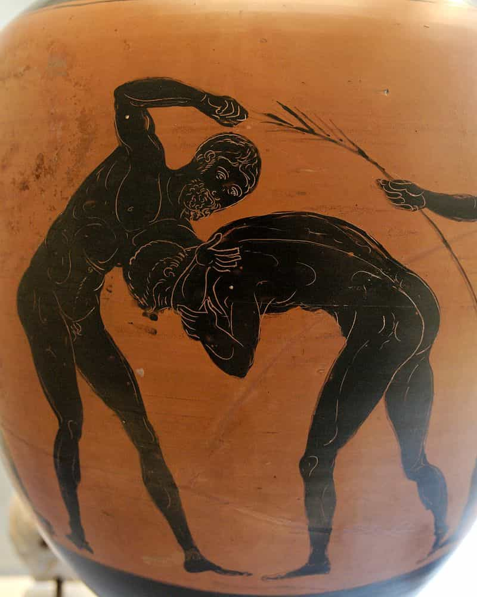
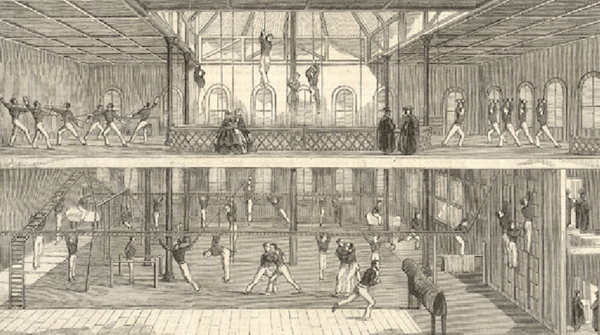

The state of fitness absolutely sucks nowadays. We all know this to be the case at even the most casual of glances around. But once you observe that such a phenomenon exists, then you have to ask why? More specifically, not only have people become less fit, but the practice of fitness itself seems to be less effective than ever. There are certainly more gyms around then you could shake a stick at, but despite the sheer ubiquity of fitness facilities, people are getting fatter than ever. Why?
A previous article that I have written on this website lays the majority of the blame for the modern world’s growing obesity epidemic on the crappiness of modern diets, combined with a general decay of society… but wait just a minute!
This picture shows men in some rural backwater in India still managing to train and make themselves stronger. Some of the “maces” they’re training with appear to literally be stone blocks on scrap metal poles.
So the general suckiness of modern America is likely not in and of itself a reason for the dismal state of physical fitness. To figure out why that is the case, I think it is best to briefly look at a history of fitness as a discipline and try to find where things went off the rails.
The Ancients
While training likely existed as long as humanity has been walking on two feet—and naturally, movements such as hewing wood, hunting, and stone knapping were arduous physical labors—the first evidence of dedicated physical training as a discipline comes from the first large states/empires that arose millennia ago. Evidence of physical training and strenuous sports exist in civilizations as diverse as the Egyptians, the Persians, and the Greeks.
Naturally, the majority of these sports and trainings were done for practical purposes: namely, to train the young man for war. Remnants of this “classical” fitness can be seen in the Olympics: the running events, javelin throwing, boxing, wrestling, and discus illustrate this point.

Pankration was sadly rejected outright by Pierre de Coubertin
In addition to these, the first gymnasia were opened at this time. It was the first time that physical fitness as an end in and of itself was pursued. Of note is that early records from the time period indicate that much of the training of the time was calisthenic in origin, and bears much similarity to training undergone in the modern sport of gymnastics: handstands, heavy-duty calisthenics, la planche, human flags, and the like.
The Renaissance
The dark ages and medieval ages, perhaps due to the Christian eschewing of the flesh, didn’t focus much on physical training—what physical training there was was largely from heavy labor and military training for the noblemen. Instead, we can skip ahead to the Renaissance and Enlightenment periods to see the rebirth of physical fitness as its own discipline.
Writers and physicians such as Cristobal Mendez and Mercurialis published some of the earliest fitness related tomes that still exist to this day—De Arte Gymnastica and El Libro por Ejercicio Corporal, the latter of these providing the featured image. Various parts of these books advocate such exercises as rope climbing, the balance beam and, you guessed it, even more calisthenics.
Bodyweight training remained a major facet of physical fitness for centuries, well into the 19th century—innovations such as Thomas Inch’s plate loading barbell in 1905 were of course very useful, and the philosophy behind physical training continued to change (namely, that it took on distinctively nationalistic undertones in the later part of the 19th and early 20th centuries), but even by the time of the 2nd world war, physical culture could largely be said to be a combination of bodyweight and weight training, similar to what I myself advocate. So what seems to be the problem here?

The Decline
So with such a solid background of worthwhile, functional physical training, where was the point of diversion where people just… forgot about all of it?
Some would argue that the rise of machine fitness caused the decline—I would disagree with this. While machines are vastly inferior to free weights and calisthenics for the training of real functional strength and ability, they’re certainly better than nothing, and if it was merely a case of “Everybody is just using cable machines and treadmills instead of hoofing it in the hot sun”, then we’d certainly see far less obesity than we have today—we would have a nation of people with fluff muscles and possible joint imbalances, but that’s certainly preferable to the nation—and increasingly nations—of fatbodies we currently have.
A major problem, in my opinion, is the rise of fitness as an industry—in other words, the living core of what stuff actually works is relatively narrow, and thus it’s pretty hard to make yourself rich off a “meat and potatoes” regimen. It’s much better to hock a “get fit quick” scheme to lazy fatbodies that conveniently lasts forever and thus lines your pockets.
No matter what celebrity martial artist is attached to this, I guarantee none of them actually used this piece of crap
On that note, we can against point to a general decline of society as a culprit: to be more specific, the idea that people have indeed become substantially lazier and less willing to put in a gradual grind for what they want out of life, for a variety of reasons that could probably have an entire book written on just them.
Even those who do more or less become fit nowadays have likely just made themselves look fit, perhaps the inevitable result of a society that has debased itself as much as ours has. While even the ancient Greeks appreciated an aesthetic physique, it was an aesthetic that came from, and was associated with, physical power and functionality.
So if you want to know why fitness seems more confused and lackluster than ever now, I think that’s somewhere in the ballpark: a surfeit of counteracting information ironically making the average person more ignorant than ever, and a general decay of society furthering the ignorance of people.
What can be done to possibly ameliorate this? Here’s a good place to start.
Read More: How Effective Are Books On Fitness?